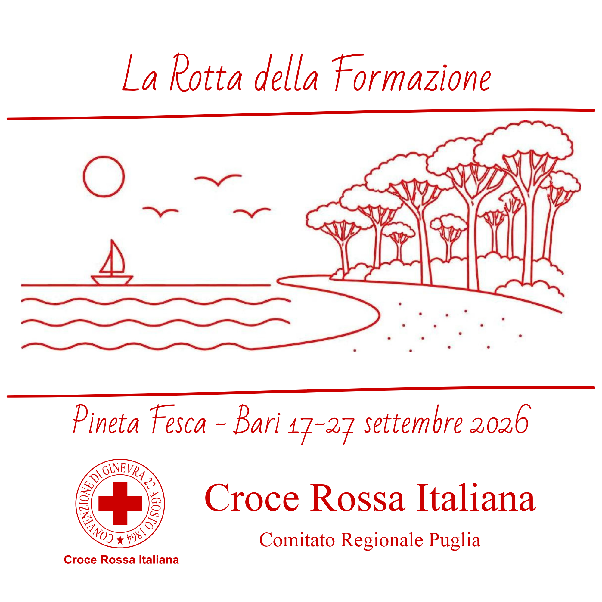

⛺ Campo completo
Tende alloggio e didattiche, posto di comando, infermeria, cucina, mensa, magazzino, servizi igienici, docce, generatori e viabilità interna.
Portale informativo del 2° Campo di Formazione Residenziale: corsi, logistica, segreteria, programma, contatti e indicazioni operative in un unico punto di riferimento.

L’attività simula condizioni realistiche di intervento in emergenza e punta a rafforzare interoperabilità, capacità logistiche, sanitarie e di coordinamento.
Tende alloggio e didattiche, posto di comando, infermeria, cucina, mensa, magazzino, servizi igienici, docce, generatori e viabilità interna.
Attività congiunte tra Comitati CRI e Componenti Ausiliarie delle Forze Armate per addestramento e formazione.
L’obiettivo generale prevede la formazione di circa 150 volontari attraverso corsi specifici attivati per l’occasione.